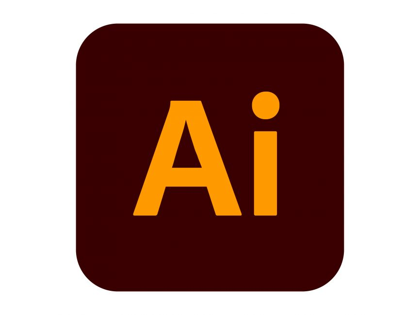

<!DOCTYPE htlm>
<htlm lang="fr">
<head>
    <meta charset="UTF-8">
    <meta name="viewport" content="width=device-width, initial-scale=1.0">
    <title> Document </title>
    <link rel="stylesheet" href="style.css"></link>
</head>

<!-- balise head qui permet de faire l'entête de la page web -->
<header>
    <h1> <strong> Mon CV </strong> : Clarisse LE BAUT </h1>
</header>

<body>
    <main>
   <!-- différentes sections, chancune correpsond à une catégorie du CV -->
   <!-- ctrl + MAJ + a = permet de faire un commentaire sans passer par les sigle -->
    <section >
        <div class="infoperso">
        <h3> INFORMATIONS PERSONNELLES </h3>
        <p>
            <span class="info">E-mail</span>: clarisse.le-baut@laplateforme.io 
        </p>
        <p>
            <span class="info">Langue</span>:  Anglais A2
        </p>
        </div>
    </section>

    <section>
        <h3> OBJECTIF PERSONNEL </h3>
        <p> Suite à la redéfinition de mon projet profesionnel, je souhaite activement m'orienter dans les métiers de l'informatique et du numérique. </p>
    
    </section>
        <div class="etre">
            <h4> SAVOIR ÊTRE </h4>
                <dt>Autonome</dt>
                <dt>Organisée</dt>
                <dt>Patiente</dt>
                <dt>Productive</dt>
                <dt>Sérieuse</dt>
        </div>

        <div class="faire">
            <h4> SAVOIR FAIRE </h4>
                <ul>
                <li>Acceuil Public</li>
                <li>Capacité d'adaptation</li>
                <li>Tâches administratives</li>
                <li>Travail d'équipes</li>
                <li>Sérieuse</li>
                </ul>
        </div>
    </section>

    <!-- formation, placé du plus récent ou plus ancien -->
    <section>
        <div class="formations">
            <h3> FORMATIONS </h3>
                <p> 2023 - 2024 : Médiat Rhône Alpes, Prépa Concours, Villeurbane</p>
                <p> 2018 - 2021 : Licence Musicologie, Aix-Marseille Université</p>
                <p> 2016 - 2018 : Cinémagis - Ecole supérieur des métiers du cinéma, Martigues</p>
                <p> 2015 - 2016 : Ynov, Aix en Provence </p>
        </div>
    </section>

    <!-- expérience pro, placé du plus récent au plus ancien -->
    <section>
        <h3> EXPERIENCES PROFESIONNELLES</h3>
        <p>
            <span class="année">2022 Janvier- Août /</span>
            <span class="sc"> : Service Civique - Pôle Emploi, Martigues</span>   
        </p>
        <p> 
            <span class="année">2021 Juillet - Août</span> 
            <span class="fps"> : Auxiliaire Contractuelle - Service Financier, Trésorerie de Salon de Provence</span>
        </p>
        <p> 
            <span class="année">2020 Septembre - Mai</span> 
            <span class="car"> : Projet C.A.R (Création - Action -Recherche) - L'Usage du Monde</span>
        </p>
        <p> 
            <span class="année">2018 Janvier</span> 
            <span class="doc"> : Film institutionnel - documentaire, "Les Oliviers de Saint-Jean"</span>
        </p>
        <p> 
            <span class="année">2018 Mai - Juin</span> 
            <span class="regie"> : Stage Régie - long métrage, "12 Mille"</span>
        </p>
        <p> 
            <span class="année">2015 Aout - Septembre</span> 
            <span class="fpm"> : Auxiliaire contractuelle - Service Financier, Trésorerie de Martigues</span>
        </p>
    </section>

    <section>
        <h3> MES COMPETENCES </h3>
        <ul> <!-- permet de décaler légèrement la liste de la bordure --> 
            
            
                  
            
        </ul>
    </section>

    <!-- placé sous forme de liste, sans ordre paticulier -->
    <section> 
        <h3> CENTRES D'INTERÊT </h3>
        <ul>
            <li> Pratique instrumentales diverse
            <li> Cinéma </li>
            <li> Dessin </li> 
            <li> Jeux de sociétés / vidéos </li> 
            <li>Lecture</li>
        </ul>
    </section>
   
    </main>
    
    <footer> <!-- balise <footer> qui permet de crée un espace en pied de page -->
        <a href="enattentedupdf.html" target="_blank" > Mon CV en PDF </a> <!-- href pour crée un lien téléchargeable du PDF -->
        <a href="https://github.com/logout" target="_blank" > GitHub </a> <!-- mon compte GitHb n'est pas encore focntionnel pour le moment --> 
        <a href="https://fr.linkedin.com" target="_blank" > Linkedin </a>
    </footer>
</body>
</htlm>